Eleitor
Votar
-
Aceda ao sistema de voto electrónico da UL.
-
Clique em Federated Access e efetue a autenticação.
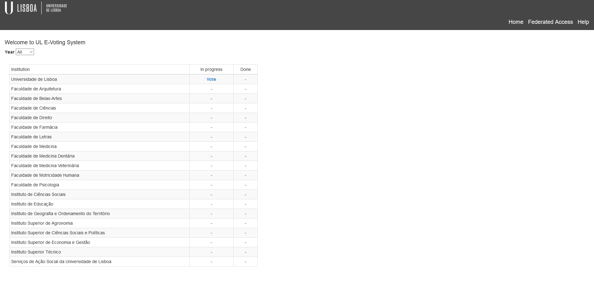
- Seleccione Votar na instituição associada à eleição.
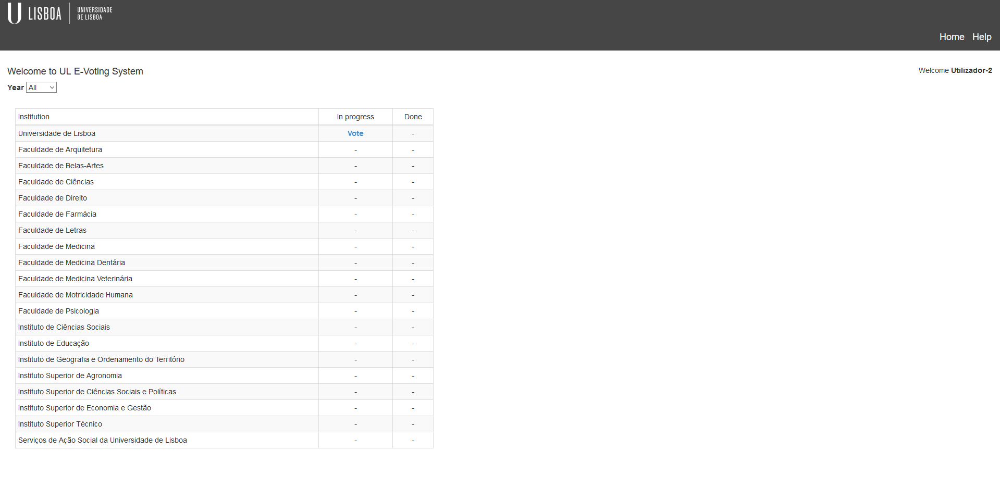
- Seleccione a eleição pretendida.
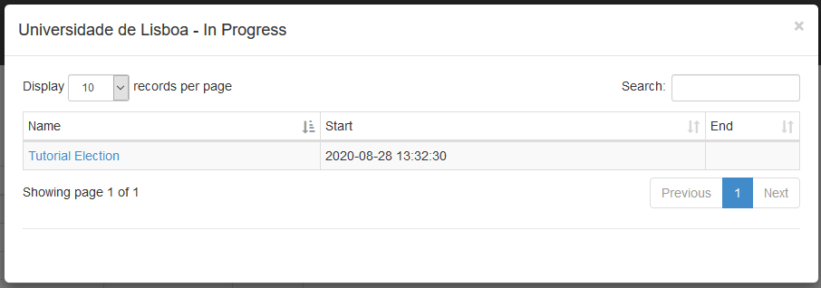
- Clique em Votar nesta Eleição.
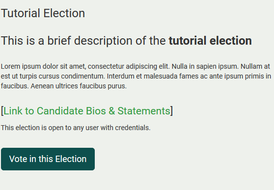
- Clique em Iniciar
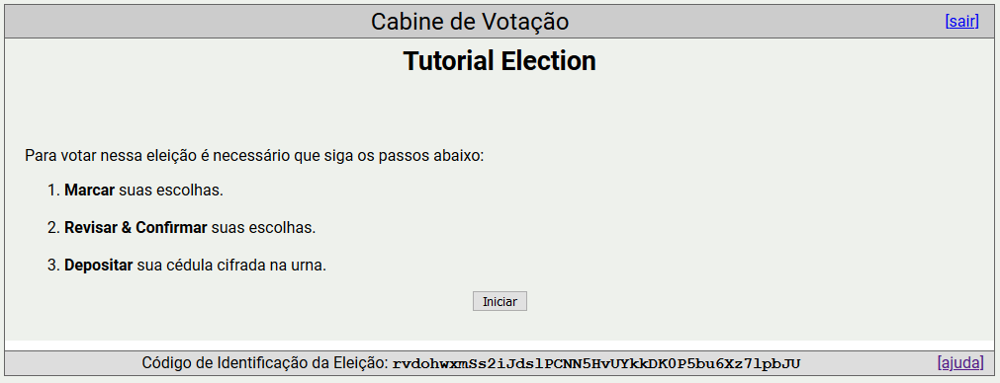
- Após seleccionar as suas respostas preferidas, responda à Próxima Questão (se existir), ou passe ao Próximo Passo .
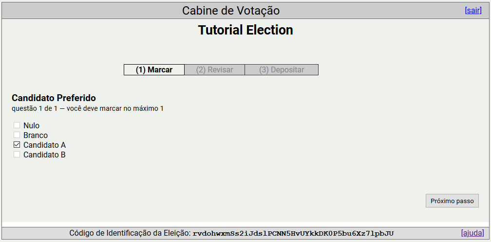
- Aqui pode verificar e alterar as suas respostas. Caso esteja tudo em ordem, prossiga para o Próximo Passo.
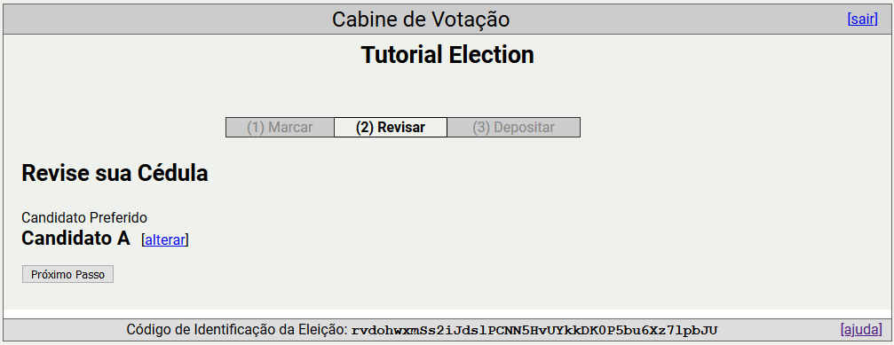
- Se o desejar, pode tomar nota do seu rastreador de voto. Este permite identificar a contagem do seu voto no final da eleição. Mais informações em link para ballot tracker.
- Também pode auditar o seu voto em vez de o depositar na urna. Mais informações em link para audited ballots.
- Por fim, pode Depositar o Voto na Urna.
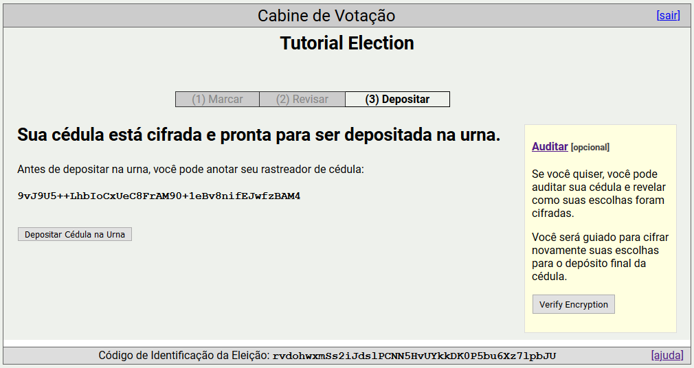
- Caso tenham sido enviadas credenciais de login por e-mail, estas serão necessárias aqui. Insira-as e efetue o login.
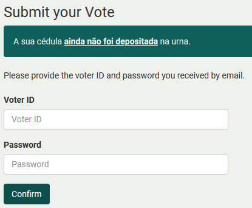
- Se não forem necessárias credenciais, terá apenas de confirmar o envio do voto para a urna.
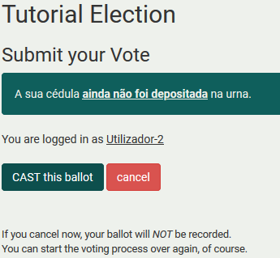
- O seu voto foi corretamente registado. Lembre-se que pode votar o número de vezes que quiser, que apenas o último voto será contabilizado.
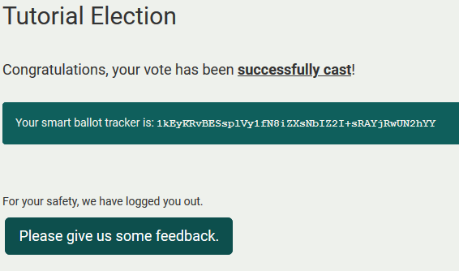
Consultar resultados
-
Aceda ao sistema de voto electrónico da UL.
-
Seleccione Resultados na instituição associada à eleição.
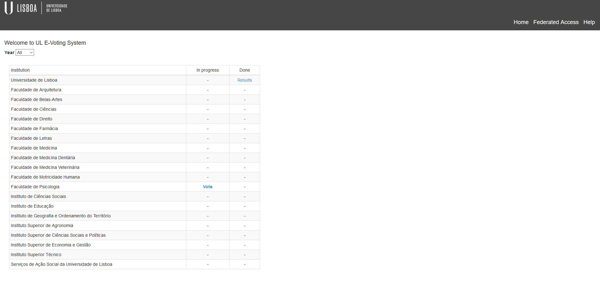
- Seleccione a eleição pretendida.
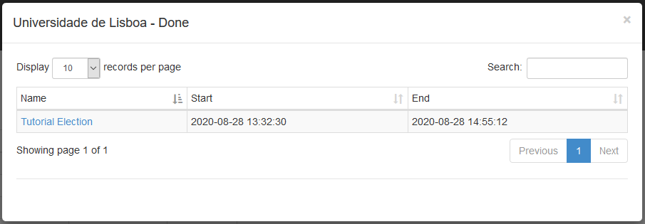
- Verifique os resultados da eleição.
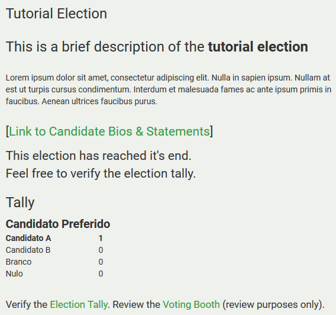
Voter Alias
Se o administrador assim o quiser, para proteger a privacidade de cada um dos eleitors, pode dar pseudónimos a cada um dos eleitores. Caso isso aconteça, o seu pseudónimo aparecerá aqui.
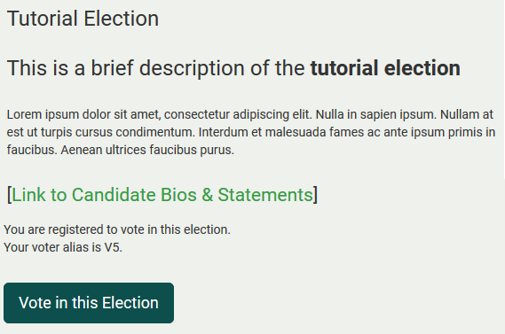
Election fingerprint
Cada eleição tem uma impressão digital única. Esta serve como identificador da eleição, e deve ser confirmado para garantir o voto na eleição pretendida. A impressão digital de uma eleição encontra-se na página principal desta, no separador em baixo Additional Info.
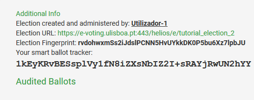
Ballot tracker
Cada voto tem um rastreador. É importante tomar nota do rastreador do seu voto, de modo a que no final da eleição, possa confirmar que o seu voto foi enviado para a urna. Note que cada voto tem um rastreador único, e portanto se enviar múltiplos votos apenas o último voto e o respetivo rastreador serão contabilizados. O seu rastreador de voto de uma eleição pode ser consultado na página principal desta, no separador em baixo Additional Info.
Audited ballots
Nas eleições que o permitam, é possível auditar votos.
Um voto auditado não é contabilizado para o resultado das eleições. O propósito do voto auditado é garantir ao eleitor que o voto enviado para o servidor corresponde à sua intenção de voto. Para tal, é dada a opção ao eleitor de abrir o voto e verificar o conteúdo deste. O eleitor pode fazer isto as vezes que quiser até estar satisfeito e confiante para enviar o seu voto para a urna. Para tal, o eleitor deve:
-
Auditar o voto.
-
Seleccionar TODA a informação na caixa de texto (carregar na hiperligação azul) e copiá-la.
- Clicar em verificar voto - abrirá um novo separador no browser.
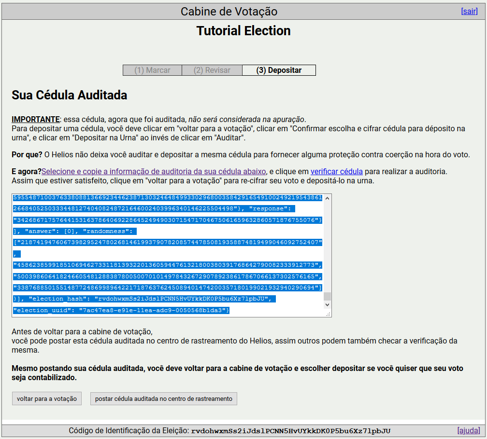
- Confirmar o URL da eleição, e colar a informação copiada previamente do voto, carregando depois em verificar. Depois de verificar a validade do seu voto, pode fechar o separador.
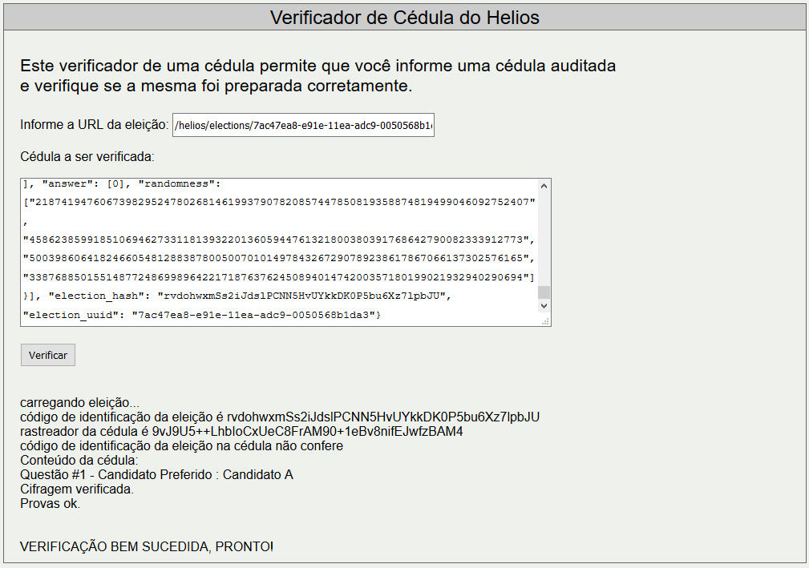
- Pode depois voltar para trás e se assim o desejar, colocar o voto auditado no centro de rastreamento, visível para qualquer utilizador e identificável pelo seu rastreador. Mais informações em link para centro de rastreamento.
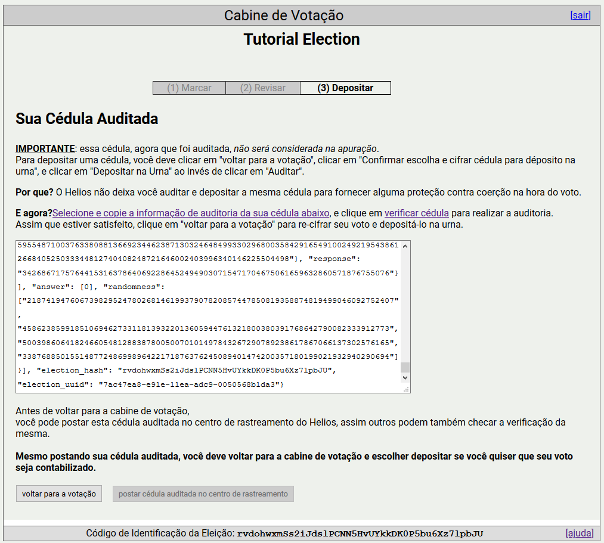
- Ser-lhe-à dado um novo rastreador de voto, e outra vez a opção de auditar ou depositar o novo voto na urna.

Centro de rastreamento
Contém todos os votos auditados e tornados públicos pelos eleitores. Pode ser acedido na página principal de uma eleição, no separador em baixo Additional Info.
Todos os votos auditados são identificados pelo seu rastreador, e qualquer utilizador os pode verificar. Para tal, clique em view do voto a verificar, copie TODA a informação, e cole-a em single ballot verifier.
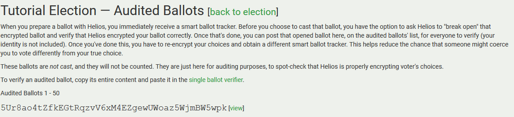
Verify tally
Após o administrador da eleição ter lançado os resultados da eleição, será possível a qualquer utilizador verificar a validez desta. Para tal, clique em Verificar resultados.
O eleitor deverá confirmar o URL da eleição, e após isso Iniciar a Verificação. O verificador irá:
- Carregar a eleição.
- Carregar a lista de eleitores.
- Carregar os votos de cada um dos eleitores.
- Verificar a validade de cada um dos votos.
- Verificar a formação das chaves públicas de cada um dos trustees.
- Verificar a contagem correta dos votos.
- Informar a validade do resultado da eleição.
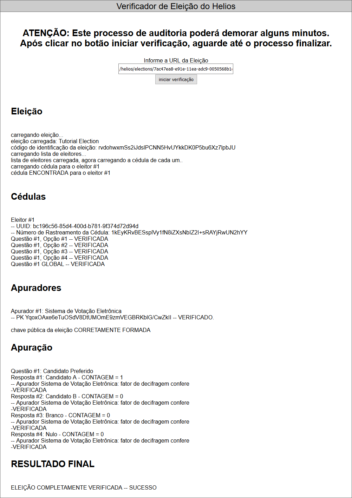
Exemplo de uma eleição válida:
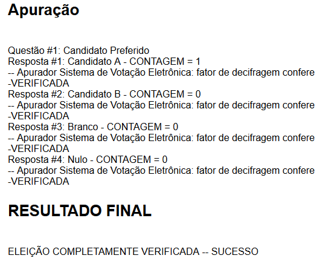
Exemplo de uma eleição inválida:
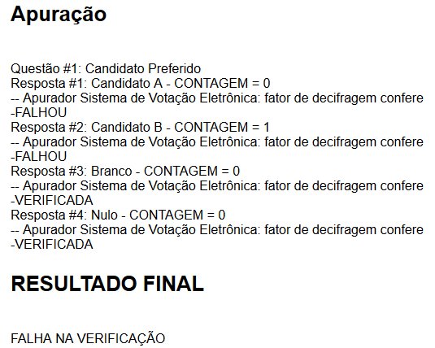